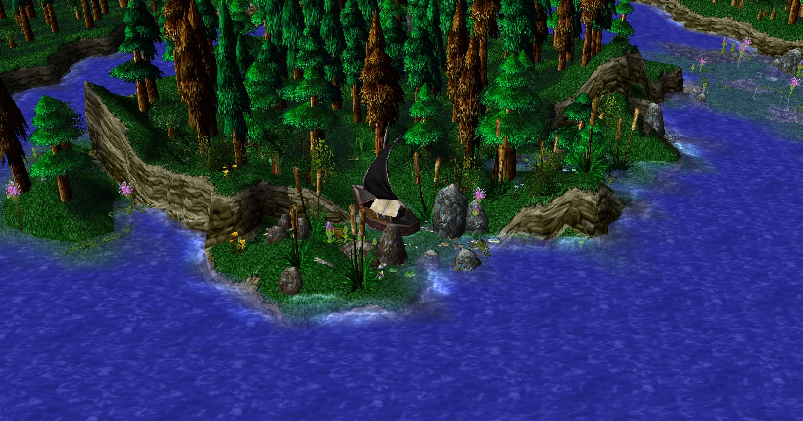
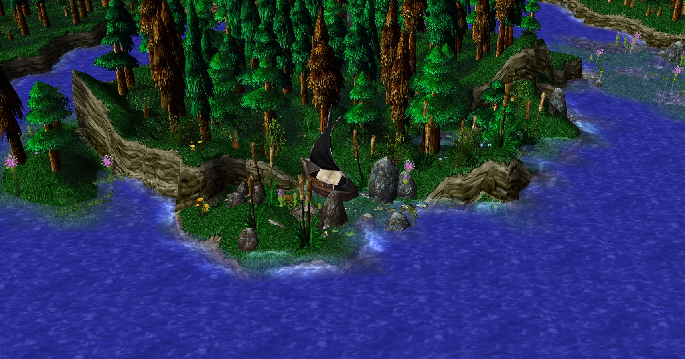
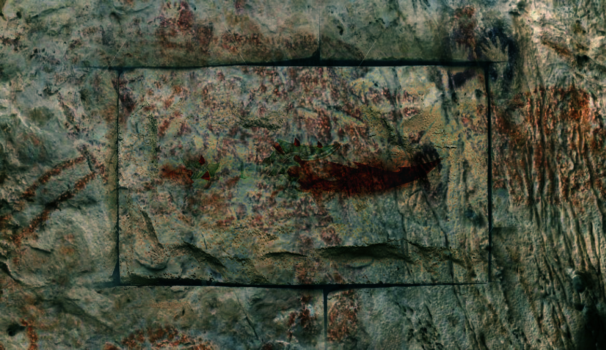
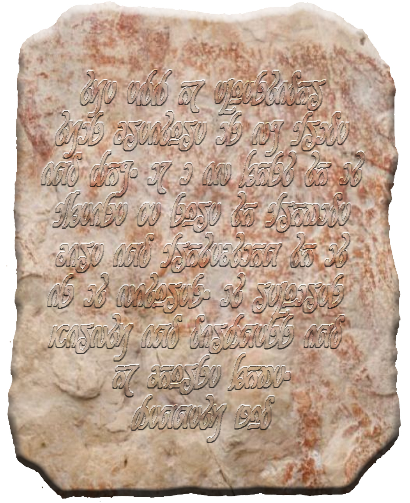

Quey River
 

Quest Island
This 'island' (which technically isn't an island, but rather a peninsula) was named quest island long ago when a man named Bhomian Dessa set out on a quest to settle a new town with his family. He traveled down Quey river heading north where he eventually founded Dessaquest. This island is home to a small settlement of wild Murlocs (character sheets). These murlocs tend to wonder about at night and tend to stay hidden throughout the daylight hours. They have a small village in the center of the island where they have their huts.
The Forgotten Lab of Kenneth Zud
Just north of Quest Island, under the shore, lies a small cave. The cave leads to an underground cavern only accessible by the water. This cavern is an abandoned laboratory of Kenneth Zud. This cave is littered with old scraps and supplies. Upon investigation the party can find hte following items.
- bone and feather quill
- bone kitchen utensils and tools
- Wooden bowls
- Some old reading material
- Three un-marked vials of liquid (randomly chosen)
- A torn page from a book.
- A bent copper coin
- Some science and archeology notes
- A small mallet
- An intact basilisk spine
- A leatherworking pattern of how to make "Gloves of the GreatFather"
Two prominent features of this cave are a large Dragon egg (The Egg of Equestador sitting atop a pedestal covered in thick fur hides in the center of the cavern with inscriptions (Written in Elvish) on it that explain how to hatch the egg and a marking on a stone on the wall that depicts a crystal dagger. Behind the dagger marking, within the stone lies one of the Loredmeyer daggers, detemined by 1d4.
The Elvan tablet reads "The Egg of Equestador; This creature is my pride and joy. If I am lost to it, please be sure to provide care and protection to it as it matures. It requires warmth and darkness, and of course, love. -Kenneth Zud".
